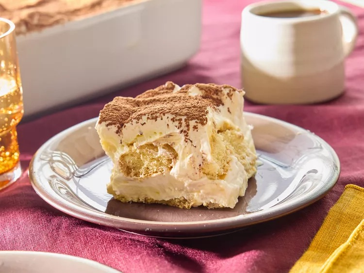

← Back to Recipes

Easy Tiramisu Recipe
This delicious and unbelievably easy Tiramisu recipe is made with coffee soaked lady fingers, sweet and creamy mascarpone (no raw eggs!), and cocoa powder dusted on top. It requires no baking and can be made in advance!
Preparation Time
- Total: 10 minutes
- Prep: 10 minutes
Ingredients you'll need:
- Ladyfingers: 1 package
- Mascarpone: 8 ounce, rtp
- Coffee: 1 & 1/2 cup cold expresso
- Heavy Whipped cream: 1 & 1/2 cup
- Granulated Sugar: 1/3 cup
- Vanilla Extract: 1 teaspoon
- Cocoa powder: for dusting on top
How to make a Tiramisu:
- Mix creamy filling. Add whipping cream to a mixing bowl and beat on medium speed with an electric mixer (or use a stand mixer). Slowly add sugar and vanilla and continue to beat until stiff peaks. Add mascarpone cheese and fold in until combined. Set aside.
- Dip Lady fingers. Add the coffee (espresso) to a shallow bowl. Dip the lady fingers in the coffee (Don't soak them--just quickly dip them on both sides to get them wet) and lay them in a single layer on the bottom of an 8x8'' or a similar size pan.
- Layer mascarpone. Smooth half of the mascarpone mixture over the top. Add another layer of dipped lady fingers. Smooth remaining mascarpone cream over the top.
- Dust cocoa powder generously over the top (I use a fine mesh strainer to do this). Refrigerate for at least 3-4 hours or up to overnight before serving.
Notes
- Alcohol: Tiramisu can be made with or without alcohol. This recipe calls for coffee flavored liqueur because I like that it enhances the coffee flavor, but other options are marsala wine or brandy.
- Make Ahead Instructions: Tiramisu is even better when made in advance, allowing the flavors to blend! It will keep in the refrigerator for 2 to 3 days.
- Freezing Instructions: Make completely, but don't dust with cocoa powder. Cover tightly with plastic wrap and then tinfoil and freeze for up to 3 months. Thaw in the refrigerator overnight and dust with cocoa powder a few hours before serving.
Nutrition
The table below shows the nutritional values per serving.
| Calories | 297kcal |
| Carbs | 26g |
| Protein | 5g |
| Fat | 18g |
| Sugar | 11g |